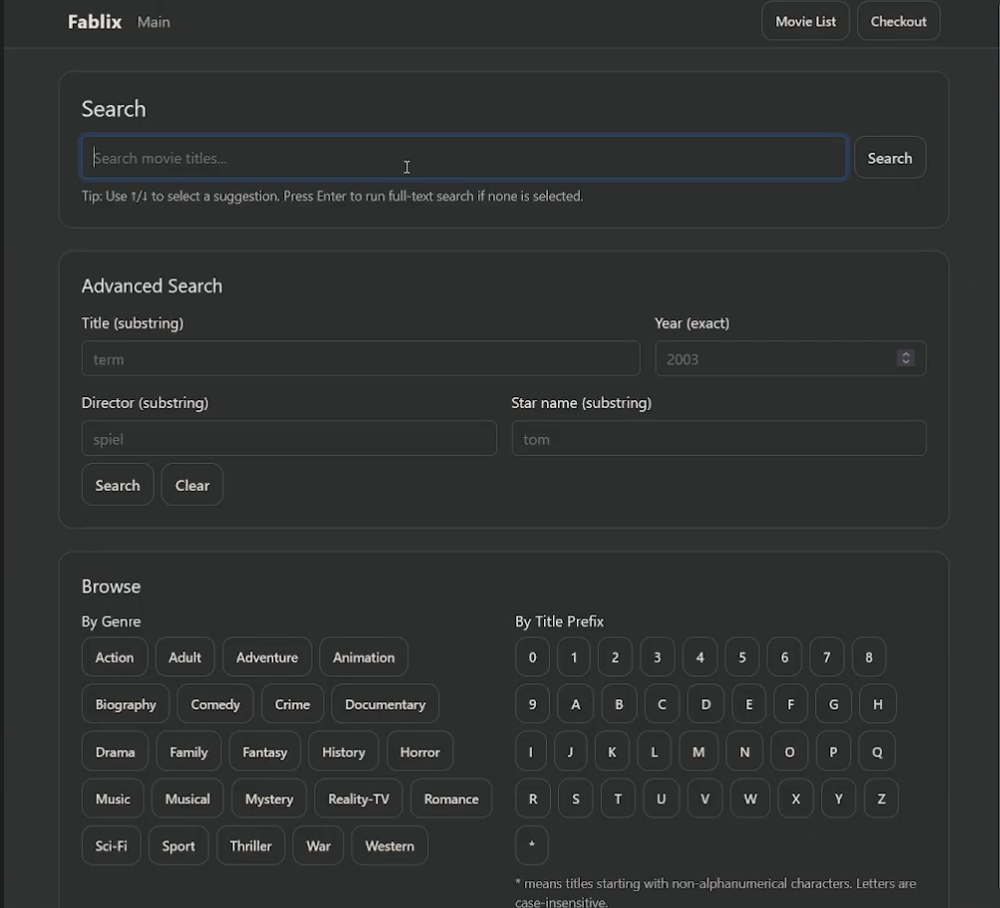
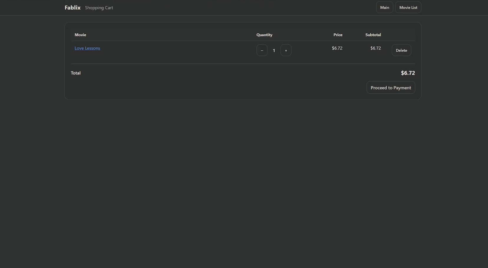
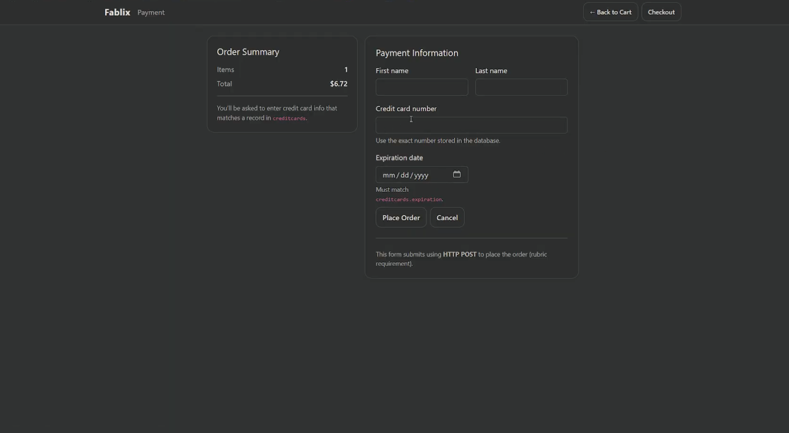
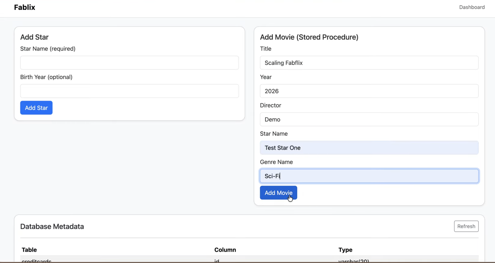
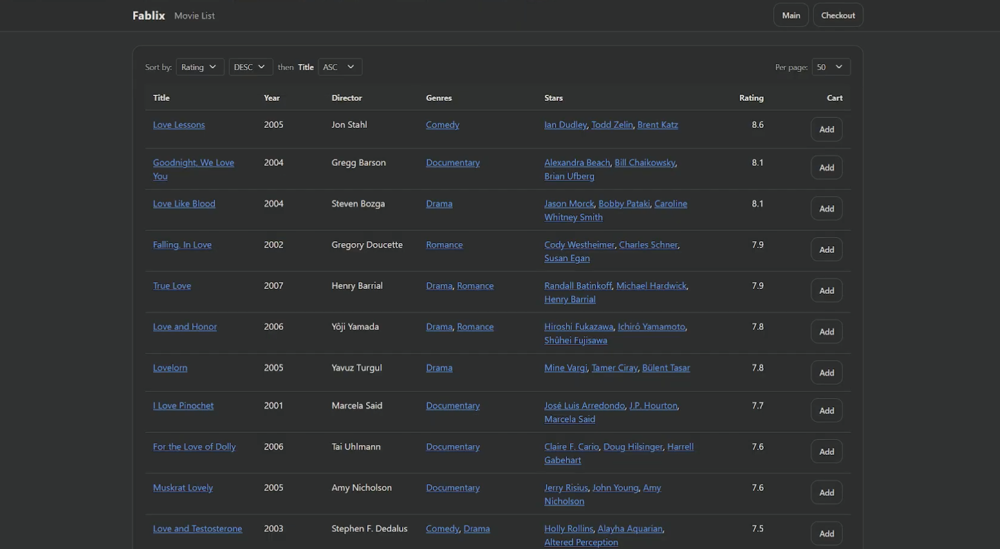
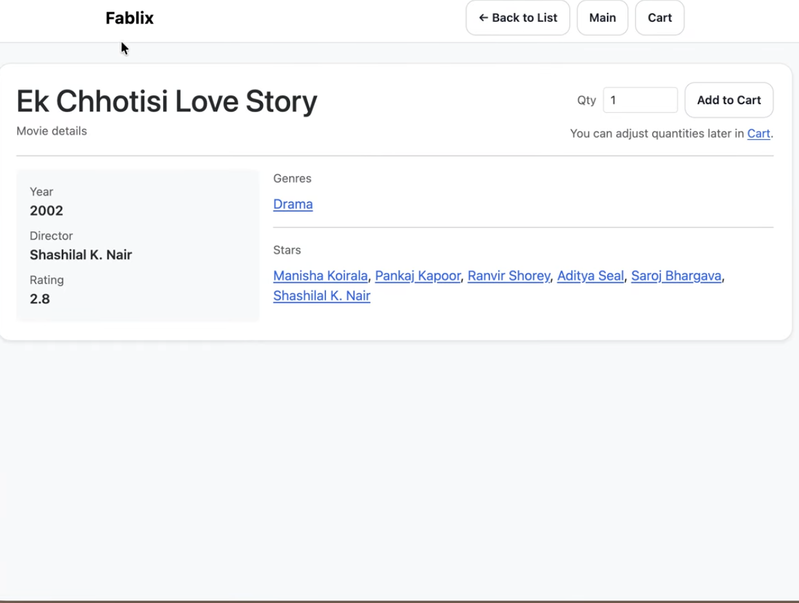

Full-stack application · Search and AI
Fabflix + Search Engine
A movie database application combined with information retrieval work across ranked search, indexing, pagination, and ChatGPT summaries.
Role: contributor on a team project.
My contributions
- Implemented backend APIs, database connectivity, movie and actor pages, authentication, and session protection.
- Built and refined search, autocomplete, fuzzy-search behavior, pagination, and sorting.
- Contributed indexing and information-retrieval work, including ranked search, TF-IDF concepts, and pagination across results.
- Integrated ChatGPT-generated movie summaries into the search experience.
- Added password hashing, prepared statements, CSV import validation, employee tools, checkout, Redis sessions, Docker, and Kubernetes configuration.
Project 5 interface
Selected interface screens from the Project 5 Fabflix build, showing the search experience, movie browsing, account flow, checkout, and employee tools.






How the pieces connect
The application combines a Java/MySQL movie platform with Python information-retrieval work. Search terms move through indexing and ranking, results are paginated for the interface, and a summary layer makes movie information easier to scan.
Project materials
The source repositories are team/course project materials. This page focuses on my contributions.